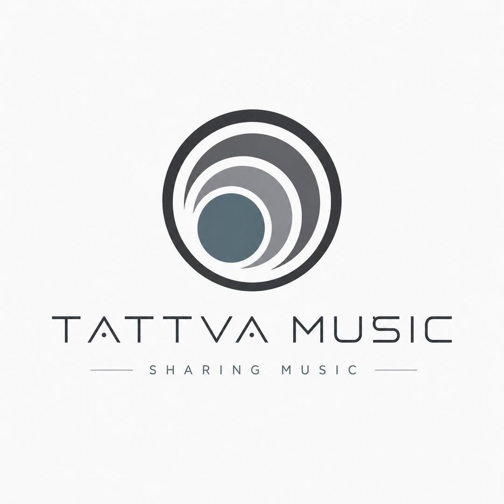

Tattva Music — um protótipo de México produtor
Fundada no verão de 2012, a Tattva Music nunca foi apenas uma gravadora. Foi uma tentativa de imaginar um México que constrói tecnologia em vez de apenas importá-la — uma marca cultural em busca do seu próprio app, da sua própria loja, da sua própria identidade digital. Fracassou como negócio. Triunfou como visão.

A fundação — verão de 2012
Depois de tê-lo desejado por muito tempo, no verão de 2012 finalmente me atrevi a fundar a Tattva Music. O logo, a paleta de cores e a tipografia foram criados pela minha amiga Leonor Hernández, que em todo momento ofereceu seu apoio técnico e profissional ao projeto. O nome em sânscrito — tattva, "a essência das coisas" — não era um enfeite: era uma promessa.
Mas o que quero contar aqui não é o elenco de artistas nem a discografia — essa história vive na página de Música. Esta é a história do que a Tattva Music tentava se tornar, e do porquê ela ainda me importa mesmo que nunca tenha dado certo financeiramente.
Mais do que uma gravadora
Uma coisa é "ter uma gravadora" no sentido tradicional: lançar tracks, subi-las ao Beatport, circular pela cena, ter artistas, fazer promoção de marca. Mas outra coisa muito diferente é dizer: vamos fazer um app iOS próprio para a gravadora. Isso já não era só música. Era cultura + software + marca + distribuição + identidade digital.
Em um país onde muitas vezes a tecnologia é consumida como algo importado — a plataforma americana, o hardware asiático, o SaaS estrangeiro, a marca global — a equipe da Tattva estava fazendo algo raro: uma marca cultural mexicana tentando ter sua própria camada tecnológica.
"Por que uma gravadora mexicana tem que se limitar a usar as plataformas dos outros? Por que não podemos ter app, marca, catálogo, experiência, narrativa e tecnologia próprios? Por que o México só teria que montar, revender, consumir ou imitar?"
Um México produtor, não só consumidor
E sim — o México tem talento e já tem startups relevantes, sobretudo em fintech e serviços digitais. Não é um deserto total. Mas estruturalmente ainda está longe dos países que convertem conhecimento em marcas tecnológicas globais. O México aparece na posição 58 de 139 economias no Global Innovation Index 2025, e a própria OMPI mede essa posição como capacidade de inovação, não apenas como "há gente inteligente aqui". O gasto em P&D conta a mesma história: o Banco Mundial situa o mundo perto de 2,6% do PIB em 2023 e a OCDE perto de 2,93%, enquanto o México está muito abaixo desses níveis.
Então, mesmo que a Tattva Music não tenha vencido como negócio, o gesto era visionário. Talvez tenha fracassado economicamente, mas conceitualmente apontava numa direção muito potente.
Construir um pequeno ecossistema próprio
A Tattva Music foi uma das minhas tentativas de não ficar preso no "sou DJ". Empurrei-a para gravadora, depois para a nossa própria loja online, depois para o nosso próprio app, depois para software, depois para a ideia de uma companhia multimídia. Tentando, como sempre, não desperdiçar nada — nenhuma experiência.
- Gravadora — um lar para artistas mexicanos e internacionais.
- Loja — a nossa própria loja online, não só o marketplace dos outros.
- App — um app iOS nativo para a gravadora. Esta foi a dobradiça.
- Software — o app é o que me fez começar a pensar em voltar ao software.
- Multimídia — software de áudio, audiovisual, videogames, uma companhia cultural mais ampla.
Foi por causa daquele app da Tattva Music que comecei a imaginar o retorno ao software e transformar a gravadora em algo maior. A Tattva Music foi uma das minhas primeiras tentativas de construir um pequeno ecossistema próprio — um protótipo de país alternativo, um México onde o artista não só cria conteúdo, mas também constrói tecnologia, marca, distribuição e propriedade intelectual própria.
Um fracasso como negócio, um sucesso como visão
A Tattva Music talvez não tenha me deixado rico — na verdade acabei no cadastro de inadimplentes por causa deste empreendimento. Mas às vezes os projetos que não pagam em dinheiro pagam em identidade, direção e capacidades futuras. Ela me ajudou a me tornar o tipo de pessoa que eu depois poderia ser: engenheiro, arquiteto de sistemas, entrevistador técnico e construtor de pipelines com IA.
E há uma ironia silenciosa nisso: justamente porque forjou essas capacidades, saímos do buraco financeiro em que nos metemos por este empreendimento mais rápido do que o esperado — e depois prosperamos de verdade.
"A Tattva Music fracassou como negócio, mas não como visão. Foi um protótipo de país alternativo."
A porta que ficou aberta
Talvez um dia eu retome a história com a música que ficou pendente. Mas, se isso acontecer, será também um projeto tecnológico e cultural — não um passo atrás, mas a mesma ideia com ferramentas melhores.
Ainda mantenho a capacidade de publicar música no Beatport, Apple Music e outras lojas. Então, se alguém tiver material que queira colocar nessas plataformas, entre em contato — quem sabe eu topo lançá-lo.